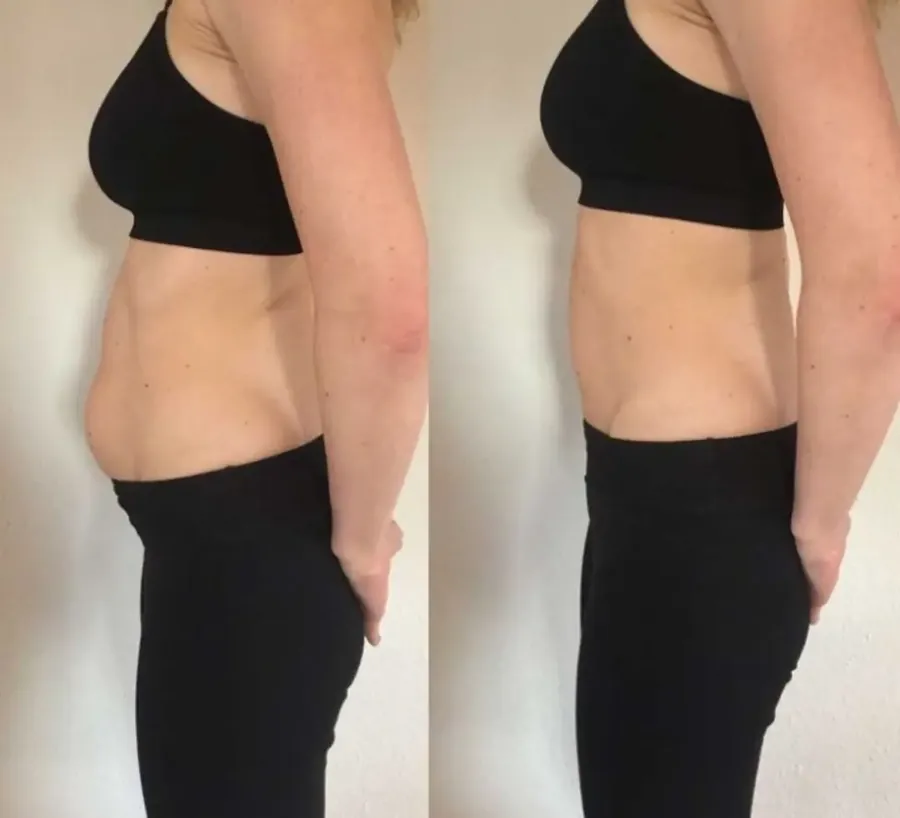

Fisioterapia
Diástase abdominal
Comum depois da gestação e muitas vezes confundida com gordura ou flacidez.
A diástase é o afastamento dos músculos retos do abdômen. Além da barriga mais projetada, ela pode deixar o abdômen fraco e mudar a postura.
Sinais de alerta
- Estufamento no meio da barriga ao fazer força
- Abaulamento do abdômen
- Sensação de fraqueza no abdômen
- Dificuldade para ativar a musculatura
Como tratamos
Avaliação da distância entre os músculos e protocolo de fisioterapia para recuperar a função do abdômen, a postura e o contorno da cintura. Em alguns casos já se vê diferença nas primeiras sessões; cada corpo responde de uma forma.
Agendar avaliação de diástase